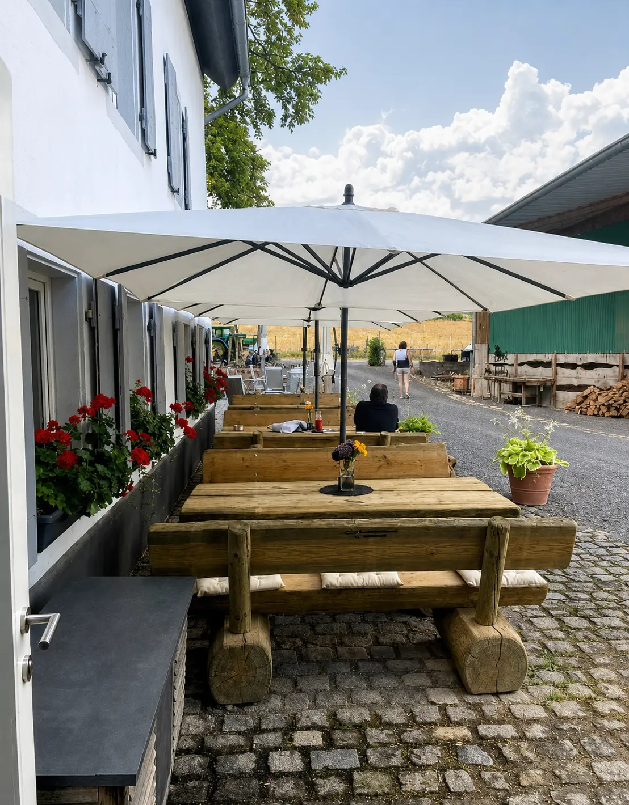

Kontakt & Anfahrt
Wir freuen uns
auf Ihren Besuch.
Restaurant, Hofcafé, Ponyhof und Reitschule liegen zwischen Brauneberg und Burgen.
Direkter Kontakt
Britta und Peter Böhm
Jungenwaldmühle 1
54472 Brauneberg
Für Tischreservierungen, Reitangebote und Fragen zu den Islandpferden ist ein kurzer Anruf der schnellste Weg.